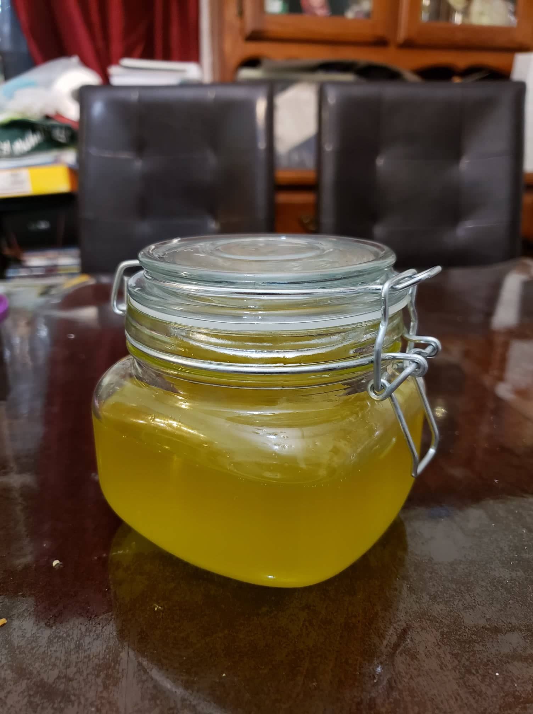

Nit’ir Qibe

Ingredients:
- 2 cups Unsalted butter
- 1/4 cup Onion, diced
- 3 tbsp Garlic, minced
- 2 tbsp Ginger, minced
- 3 Black cardamom pods
- 1 2-inch stick Cinnamon
- 3 Cloves
- 1 tsp Fenugreek seeds
- 1 tsp Black peppercorns
- 1 tsp Coriander seeds
- 1/2 tsp Cumin seeds
- 1 tsp Dried oregano
- 1/4 tsp Ground nutmeg
- 1/4 tsp Ground turmeric
- Optional: 1 tbsp Besobela
- Optional: 1 tbsp Kosseret
Instructions:
- Place just the whole spices into a saucepan over medium heat. Toast for 1-3 minutes or until very fragrant. Be careful not to burn.
- Once fragrant, add in all the other ingredients. Bring to a simmer over very low heat. Simmer over low heat for 60 - 90 minutes.
- Pour the butter through a cheesecloth and into a jar. Let cool completely before sealing.